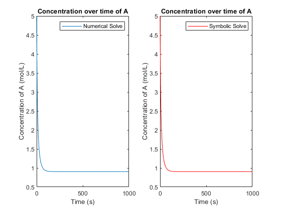

Vr = 1000;
V_in = 4;
Ca_in = 5;
k = 0.01;
Ca0 = Ca_in;
n = 1;
clf
syms Ca(t) rA t A B C D
A = -2*k;
B = -V_in/Vr;
C = V_in*Ca_in/Vr;
rA = k * Ca^2;
dCa = diff(Ca,t);
Eq1 = diff(Ca,t) == A*Ca^2 + B*Ca + C;
V = odeToVectorField(Eq1);
F = matlabFunction(V,'vars',{'t','Y'});
CAsol = ode45(F,[0,1000],[Ca0]);
hold on
x = linspace(0,1000,100000);
y = deval(CAsol,x,1);
subplot(1,2,1);
plot(x,y);
hold on
legend('Numerical Solve');
ylabel('Concentration of A (mol/L)')
xlabel('Time (s)')
title('Concentration over time of A')
cond = Ca(0) == Ca0;
CAsymb(t) = dsolve(Eq1,cond);
hold on
x = linspace(0,1000,100000);
FUN = matlabFunction(CAsymb);
y = feval(FUN, x);
subplot(1,2,2)
plot(x,y,'r');
hold on
legend('Symbolic Solve');
ylabel('Concentration of A (mol/L)')
xlabel('Time (s)')
title('Concentration over time of A')
Warning: Imaginary parts of complex X and/or Y arguments ignored.
